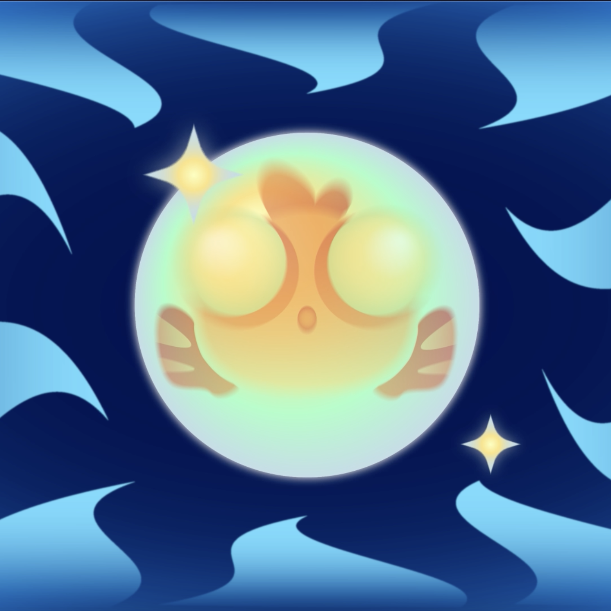
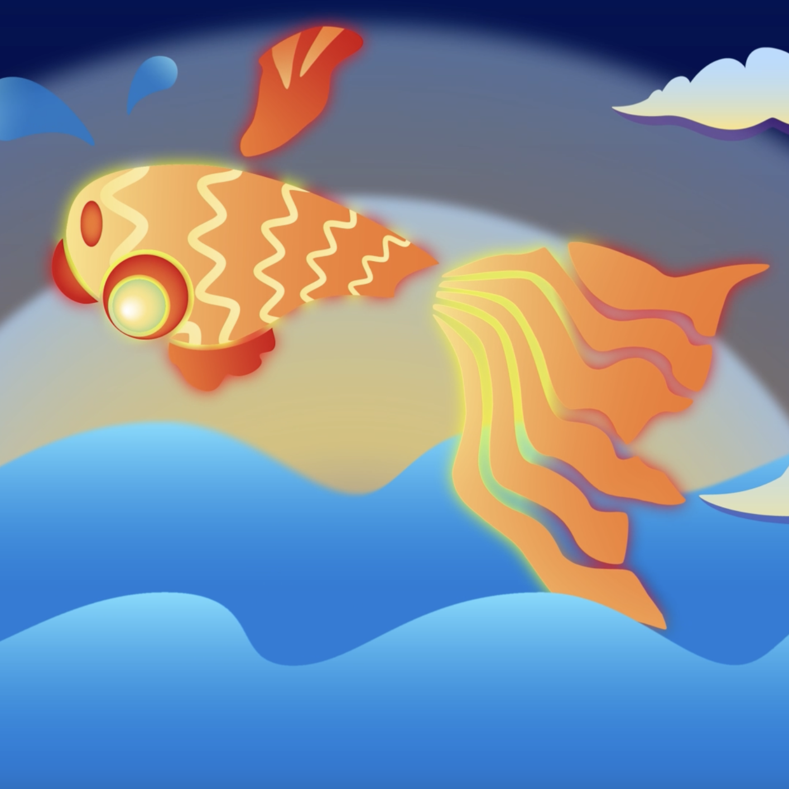

Inspired from Yoko Ono’s poem:
"Imagine letting a goldfish swim across the sky
Let it swim from the West to the East
Drink a litter of water
Imagine letting a goldfish swim across the sky
Let it swim from the East to the West"


Through its journey, the goldfish discovers that its true essence and the origins of its being—its connection to the water—are the most significant aspects of its life. The story concludes with the goldfish returning home, enriched with new insights and a deeper appreciation of its foundational self.